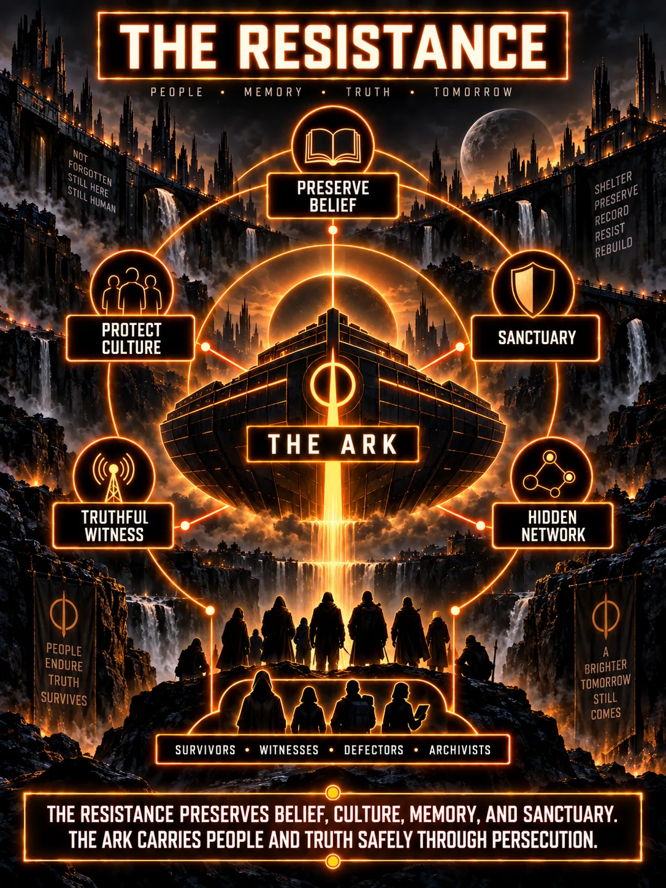

A science-fiction story in development
Two ways to turn people into instruments.
Konrad builds obedience in public. Samuel builds dependency in private.
Confirmed story information, developing ideas, and unanswered questions are labeled separately.


The opposing criminal systems
| Konrad's group | Samuel's network |
|---|---|
| Hierarchy, doctrine, militarization, and a promised collective destiny. | Access, secrets, surveillance, dependency, and individualized compromise. |
| Ancestry and controlled succession become instruments of authority. | Records, relationships, and concealed interventions become instruments of blackmail. |
| Obedience is displayed as belonging. | Isolation prevents people comparing accounts. |
| Failure threatens the ideology's claim to superiority. | Contradiction threatens the network's claim to control. |
Neither system is defined by identity or consensual behavior. The harm comes from coercion, abuse, deception, and the suppression of independent choice. Fascist purity claims belong to Konrad's worldview, not to the story's account of human worth.
Spoilers: the autonomy promise
After the Great War, Konrad refuses to leave the process. The primary leaders bait his group with a real path to permanent control of the largest empire: team with Samuel and take Sylvan before his forty-second birthday. The prize never includes the planet or the overall colonization process.
Samuel lies about what Sylvan and the new Luminai really are. Konrad believes his experienced Daemon can conquer the containment problem and prove that he is a better leader than the people running it.
Samuel promises an apparently separate autonomous group. Konrad reactivates his machinery inside a shared containment environment where Samuel has earlier structural priority. That creates the access Samuel exploits.
The apparent recovery is now part of the story's central mystery. Samuel's postwar advantage may not have ended when Konrad believed it did. The exact mechanism remains unresolved, but Konrad's effort to rebuild is the choice that places restored systems within Samuel's reach.
The macro result is established. The exact registration event, transferred permissions, verification failure, and limits on reset remain unresolved. The explanation cannot simply be that Samuel owns everyone because he arrived first.
Spoilers: the generational cost
Samuel captures succession and family systems through coercive intervention, falsified records, and blackmail. He turns younger adults against Konrad and toward dependence on his own network.
George White and Aiden Fitzgerald belong to the younger generation shaped by the older leaders' breeding program. Those leaders intended their bloodlines to extend control into the second colonization planet. Samuel instead used the same machinery to target their lines, create unauthorized heirs, damage the reliability of succession, and build private leverage across later generations.
George and Aiden believe their roles are leading toward real supremacy. They are not. Their power exists only inside containment, and Samuel always intends both men to remain disposable.
The collapse of Konrad's bloodline doctrine is the collapse of a political claim. No ancestry makes a person damaged or guilty. Descendants need lives and choices beyond serving as evidence against their abusers.
What the completed workshop established
- Samuel can control local stories and interfaces but never the process rules beneath them.
- Failure by Sylvan's forty-second birthday permanently closes the imperial route.
- Cooperation with Sylvan and the legitimate leaders for control of a city then becomes the group's only constructive option.
- Samuel refuses that option and keeps escalating after the real prize is gone.
- George becomes his operational scapegoat while Konrad is forced back into reality.
The exact meaning of taking Sylvan, Samuel's false description of the new Luminai, the imperial safeguards, and the terms of the remaining city are still open for scene-level development.
The records begin to connect
An independent resistance network discovers that events treated as isolated belong to one concealed history. Its members compare records, technical access, witness accounts, and generational consequences that no single person could prove alone.
Sylvan can help authenticate and present the result, but he does not own the investigation. The movement's role matters because the truth must survive the loss, corruption, or control of any one powerful figure.
Its final name and exact organization remain in development. The complete evidence chain, the compromised initiative, and the mechanism that reaches it remain protected story material until the author resolves them.
The Resistance's visual identity is now established. Its colors are black and orange, and its central image is an ark carrying people, belief, culture, memory, testimony, and truth through persecution. The ark represents preservation and sanctuary, not divine chosenness or a right to rule.
Spoilers: one throne promised twice
Samuel secretly promises George and Aiden the same absolute, godlike position. He keeps the promises separate so each man reads the same signs as proof that he alone is becoming the chosen ruler.
The supposed superweapon appears to confirm that story only while Sylvan is severely disadvantaged. Once Sylvan begins publicly exposing Samuel, the weapon fails and the separate promises enter the same public record. Samuel continues trying to turn the two men against each other, but repeating the con where everyone can see it becomes evidence of his method.
The trapped leaders eventually recognize Samuel as the deceiver and must fight their way out through his local stories, dependencies, proxies, and retaliation. Samuel still does not control the governing colonization process.
Sources: Konrad and Samuel Criminal Ecosystems, The Resistance, Participant Governance and Command Rules, The Breeding Program and Lineage Blackmail.
Spoilers: the obsession reaches zero
Formal separation removes the systems Samuel used through Sylvan and gives him $15 million to attempt control independently. Samuel understands the individual costs, but every failure convinces him that the next larger expenditure will finally prove his claim.
The money lasts only days. Samuel uses it to keep the war alive and force an apocalyptic culmination that will establish him as a living god. When it reaches zero, his Daemon is deleted, he is processed into stasis, and his full conduct is presented before the older contained leaders. His final failure is not a lack of opportunity. It is the objective he refuses to abandon.